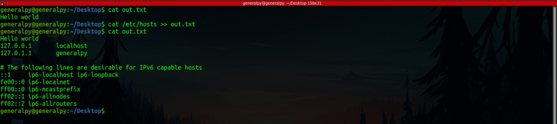
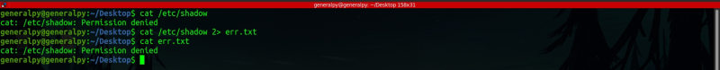
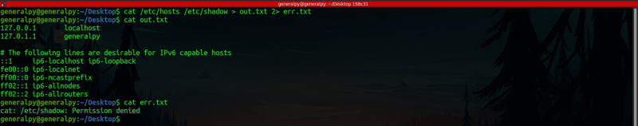
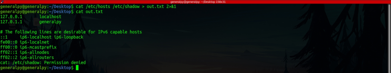
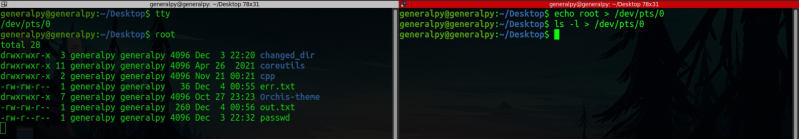

Command Redirection
As mentioned in previous page, there are 3 different data streams in linux. We can redirect these streams into files using redirection operators which are available for every stream.
To redirect output stream to a file we use >(greater than) operator.
command > <file_name>This will create a new file with file_name or will overwrite previous file and redirect STDOUT contents to it.

There might be a problem if we have to redirect output to same file without loosing its previous contents. To do that we can use >>. This will create the file if it doesn't exists else append to the file contents of STDOUT.

As we see in image above, contents are appended to file instead of being overwritten.
Each standard stream is given a number which is 0,1,2 for STDIN,STDOUT and STDERR respectively.
We can redirect STDERR by using these numbers. Under the hood , correct syntax for > and >> is :
command stream_code> file_nameTerminal defaults stream_code to 1 if not provided so we don't need to use it for output stream. For error stream we have to use stream code 2 to redirect STDERR to a file.
command 2> file_name
Same numbering has to be used when redirecting and appending.
We can redirect both streams at same time.


In image above we redirected STDOUT to file out.txt and STDERR to STDOUT thus output was redirected to same file out.txt. Note here we used &1 to get STDOUT's address, if write only then a file with name 1 will be created instead.
Since everything is a file in Linux, terminal can also be treated as a file. To get location of terminal, use tty command. We can redirect STDOUT or STDERR to terminal using that file location.

One thing to be noted here is that when we redirect STDOUT to a file, its contents are not printed on the terminal screen. To fix that behaviour we can use tee command.
tee commands comes from simple T where there are 3 ends. We can both redirect streams to file and terminal at same time.
command | tee file(s)
tee file(s)#this will start a prompt where we can enter values and the will be teed to file and STDOUT
By default tee overwrites the file but we can change that behaviour by using -a flag.